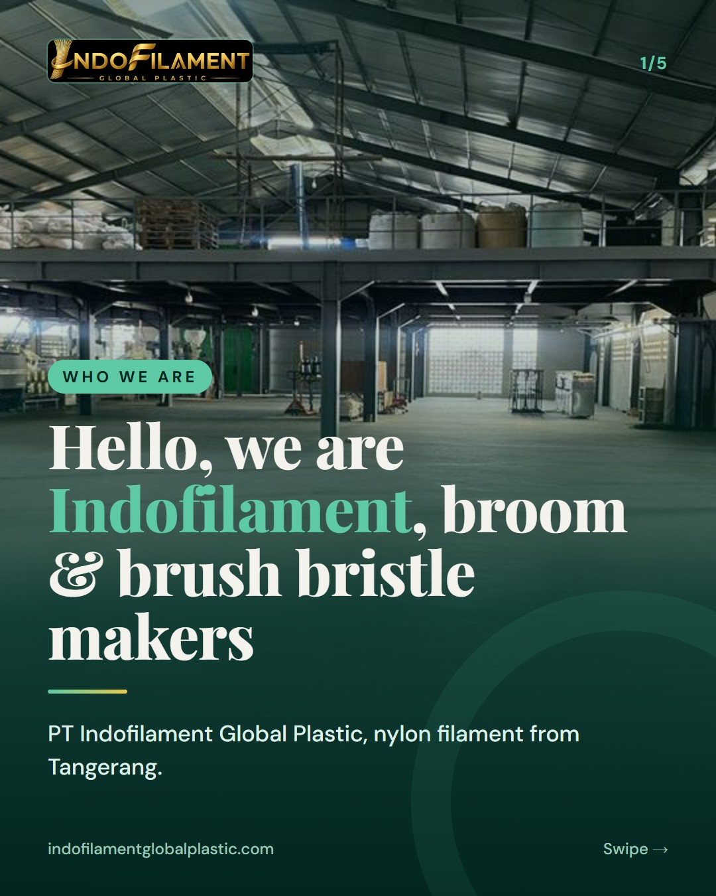
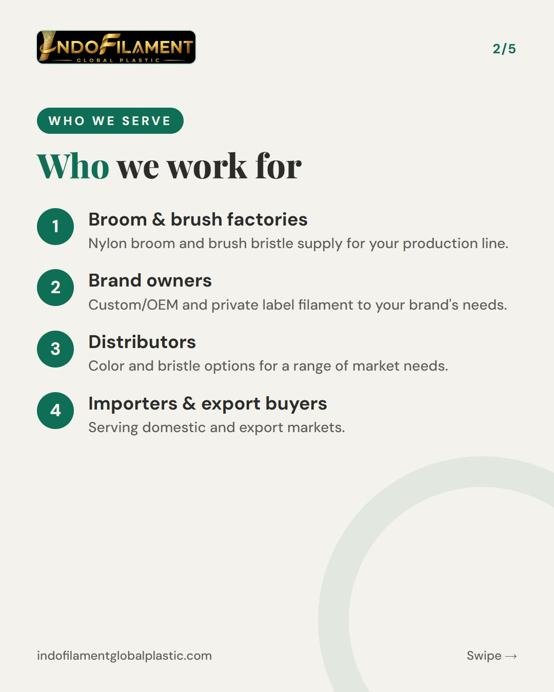
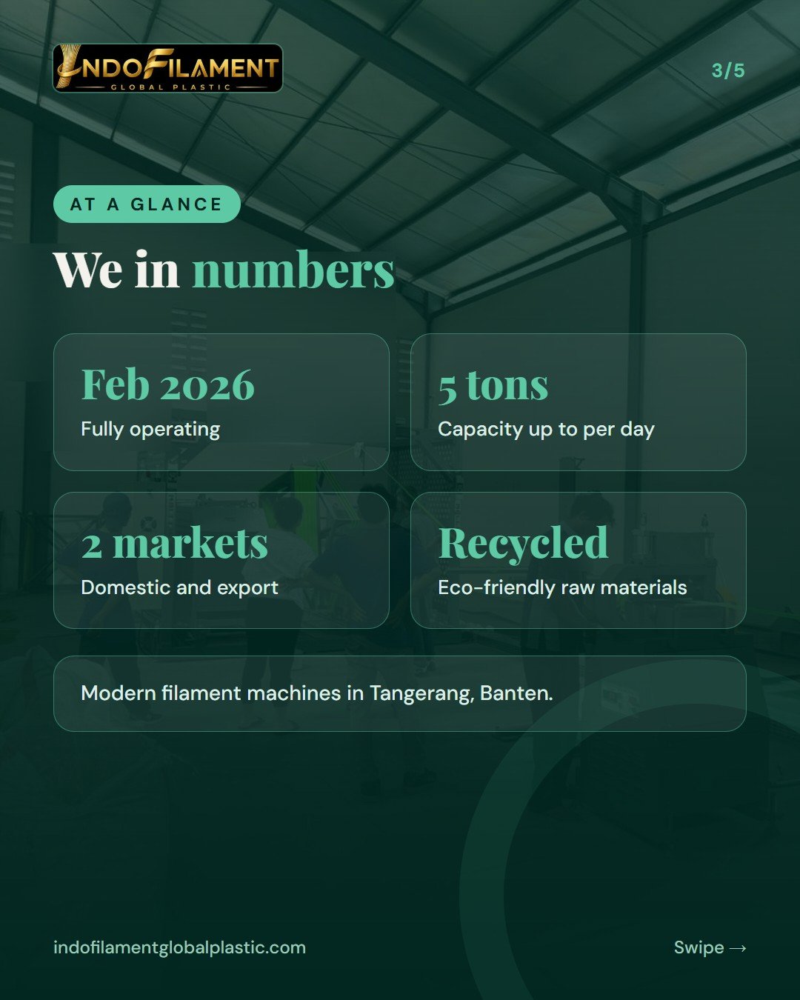
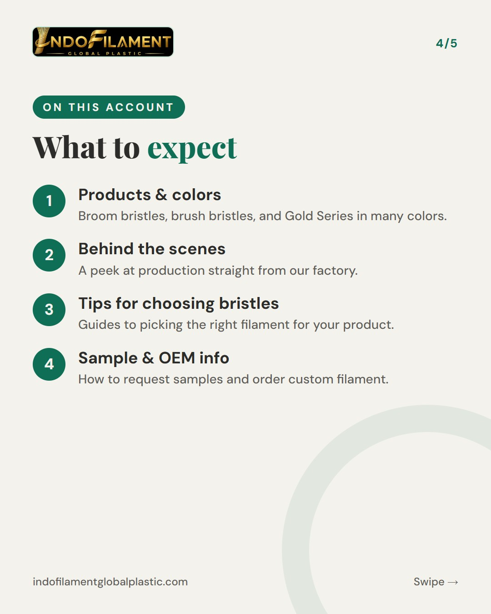
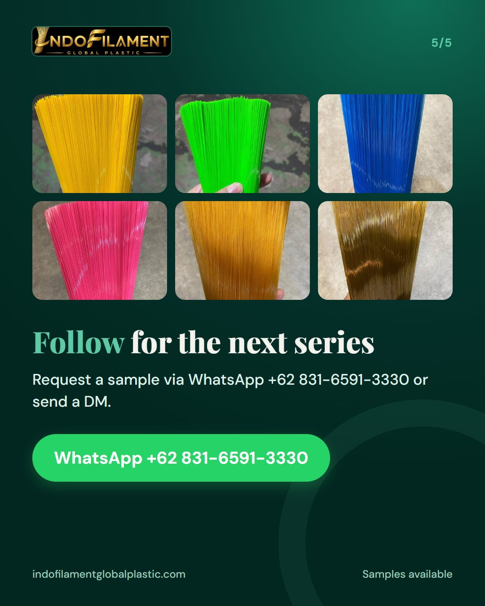

Intro series 1 of 3 - Who We Are: our first post, who we work for, and what to expect





Hello! 👋 This is our first post, and we're glad to finally say hi. We are Indofilament (PT Indofilament Global Plastic), a manufacturer of broom and brush bristles (nylon filament) from Tangerang, Banten. We work for broom and brush factories and brands, distributors, and export buyers. Our factory has been fully operating since February 2026 with modern filament machines and a capacity of up to 5 tons per day, using eco-friendly recycled plastic raw materials. On this account you can look forward to product and color info, behind the scenes at the factory, and tips for choosing the right bristles for your product. This is part one of our introduction series. Follow us so you don't miss the next parts! 🙌 Request a sample via WhatsApp +62 831-6591-3330 or send a DM. Our factory is also open for visits. #broomfilament #brushfilament #nylonfilament #madeinindonesia #Tangerang #privatelabel #OEM #broommanufacturer #brushmanufacturer #indofilament